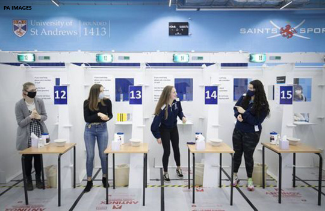

Covid-19: Tests on students are highly inaccurate, early findings show
The UK government’s plans for community testing for covid-19 received a further blow this week when early results from students testing at the University of Birmingham and universities in Scotland showed that tests had a sensitivity of just 3% and that 58% of positive test results were false.
Birmingham University used the Innova SARS-CoV-2 Antigen Rapid Qualitative Test, the only officially approved lateral flow C-19 antigen test.It was sent by the government to those universities that volunteered to test students.The same test will be rolled out to test for the virus in asymptomatic students and staff in schools and universities around the country from January.1
Birmingham spent six days testing 7500 students in a process overseen by Alan McNally, director of the university’s Institute of Microbiology and Infection, who in March was seconded to set up the government’s first flagship covid-19 testing facility in Milton Keynes.
Jon Deeks, professor of biostatistics at Birmingham and leader of the Cochrane Collaboration’s covid-19 test evaluation activities, explained the results.'We found two positives in 7189 students, which scales up to 30 per 100 000 and was shocking in itself, as Birmingham has a rate of 250 cases per 100 000,' he said.'These results are especially worrying for schools: the government should not be proceeding with plans for schools testing until they have a proper evaluation of the test.'
Using polymerase chain reaction (PCR) testing, the team retested 10% of the samples that had been negative with the Innova test and found six false negative cases, raising the rate to 60 per 100 000.
Deeks said on Twitter, 'We thus estimate that we found 2 cases and will have missed 60 (because we only double tested 10%).We estimate the true prevalence to be 0.86% (95% [confidence interval] 0.40% to 1.86%) which is much more credible than the 0.03% test positive rate.Our estimate of overall sensitivity is 3.2%.'
Scottish universities and colleges tested students from 30 November to 13 December, conducting a total of 43 925 lateral flow tests across all test sites.2 Of these, 79 (0.2%) were positive, although preliminary analysis of 31 of these positive samples showed that only 13 were positive on PCR testing, giving a false positive rate of 58%.
The findings present a fresh challenge to the government’s decision to purchase 20 million of the £15 (€16.50; $20.10) tests in October,3 with plans to perform regular tests in the hope of picking up asymptomatic cases 'across hospitals and care homes, to test patients and residents yet more regularly to help keep people safe, and for schools and universities so we can keep education open safely through the winter,' as England’s health secretary, Matt Hancock, said at the time.
From January 2021 the Department for Education will encourage schools and colleges 'to conduct weekly testing—this will help identify those who are carrying the virus without displaying symptoms, reducing the risk of transmission,' as well as 'daily testing for those identified as close contacts of workforce colleagues, students or pupils that have tested positive.'1
The use of the lateral flow test for picking up asymptomatic cases is not one of the manufacturer’s intended uses.Instructions supplied with the test state that it is 'intended for the qualitative detection of nucleocapsid antigens from SARS-CoV-2 in human nasal swabs or throat swabs from individuals who are suspected of covid-19 by their healthcare provider within the first five days of the onset of symptoms.'4
A preprint published on the Department of Health and Social Care website on 11 December by the University of Liverpool analysed test accuracy data from a two week trial in the city, concluding that the Innova test had a sensitivity of 48.89%.5 This led to the Liverpool Health Protection Board pausing its plans to use the Innova tests to allow visitors access to care homes, although it later resumed confirmatory PCR testing.
A department spokesperson told
The BMJ , 'The country’s leading scientists rigorously evaluated the lateral flow test and confirmed the accuracy of the tests using a sample of over 8500.Latest figures for similar settings show sensitivity of 57.5% generally and 84.3% in people with high viral loads.This means they are accurate, reliable, and successfully identify those with covid-19 who don’t show symptoms and could pass on the virus without realising.
'With up to a third of individuals with covid-19 not displaying symptoms, broadening testing to identify those showing no symptoms will mean finding positive cases more quickly and break chains of transmission.Anyone who tested positive with a lateral flow test during the university testing earlier this month would have been asked to get a confirmatory PCR test.'
In a statement Innova Medical Group said that it was unaware of the dataset from Birmingham and the Scottish universities.It added, 'The low level of efficacy being suggested is not something we recognise, suggesting a careful and considered examination of the methodology used would be advisable.
'This low level of efficacy is not achievable in any manner where the test is used properly and sample collection is taken correctly.When used properly the Innova test is a highly effective tool in detecting infectious people and allowing for proper response to assist in the reducing of the spread of the SARS-CoV-2 virus.'
This article is made freely available for use in accordance with BMJ's website terms and conditions for the duration of the covid-19 pandemic or until otherwise determined by BMJ.You may use, download and print the article for any lawful, non-commercial purpose (including text and data mining) provided that all copyright notices and trade marks are retained.
Posted On: 2020-12-23T00:00:00
Posted By: Stephen Armstrong

Content Date: 2020-12-23
Download Date: 2021-04-21
Document ID: L0C04AOQX